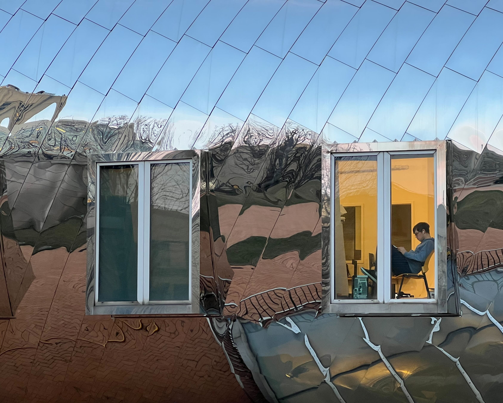

Since January 2023, I have been a Lecturer at the University of Oxford, based in the Control Group.
Previously, I held postdoc positions in Russ Tedrake’s Robot Locomotion Group at the Massachussets Institute of Technology (MIT), and Thomas Schön’s statistical machine learning group at Uppsala University. I received my PhD from the Australian Centre for Field Robotics at the University of Sydney, where I worked on data-driven modeling of stable dynamical systems under the supervision of Ian Manchester.